Configuration de la nouvelle imprimante : Merci de patienter
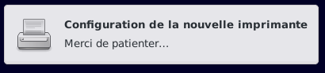
L'imprimante a été ajoutée.
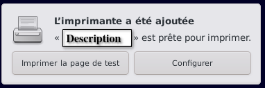

Imprimante.
Le système principal d'impression est le Common UNIX Printing System (CUPS) Le site ici
CUPS est le service d'impression par défaut.
CUPS détecte automatiquement les imprimantes.
Il peut être configuré et contrôlé en utilisant une interface web ou une interface graphique.
Pour fonctionner certaines imprimantes multifonctions ont besoin de paquets supplémentaires :
Dans ce mémo seule l'interface graphique "system-config-printer" sera détaillée.
Détection automatique de l'imprimante
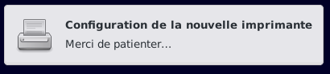
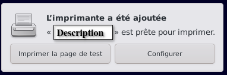
Utilisation de l'interface graphique "system-config-printer"

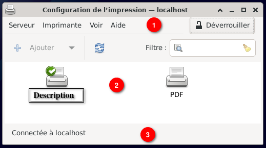
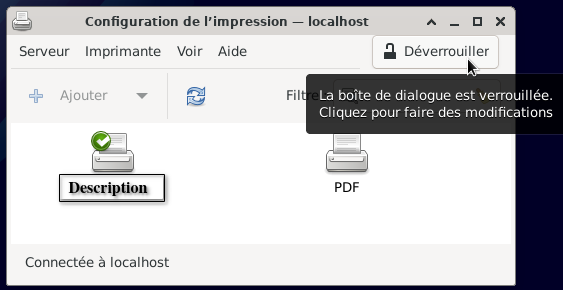
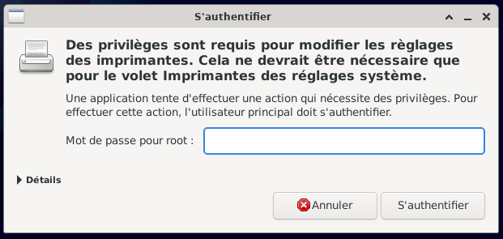
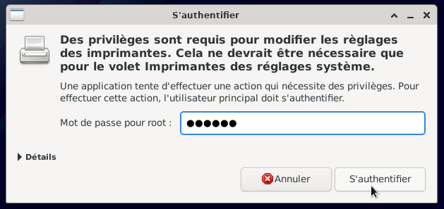
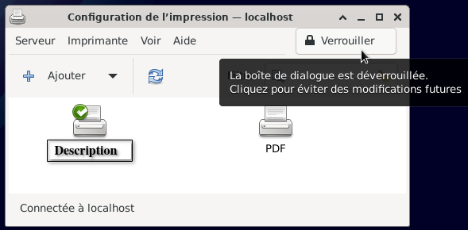
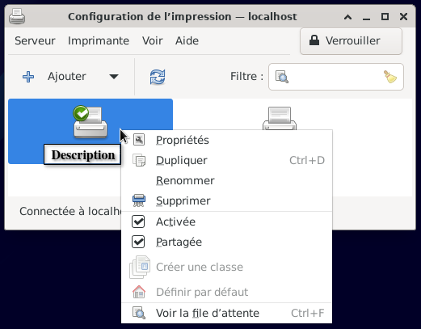
Quitter l'application graphique : Serveur > Quitter
Paramètres du serveur (pour l'imprimante)
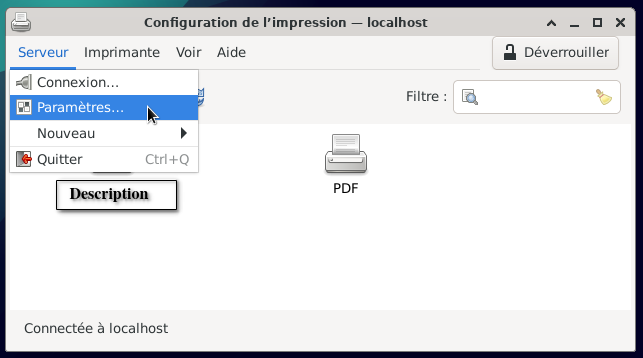
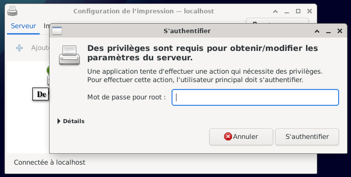
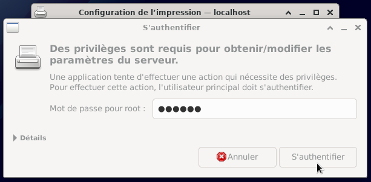
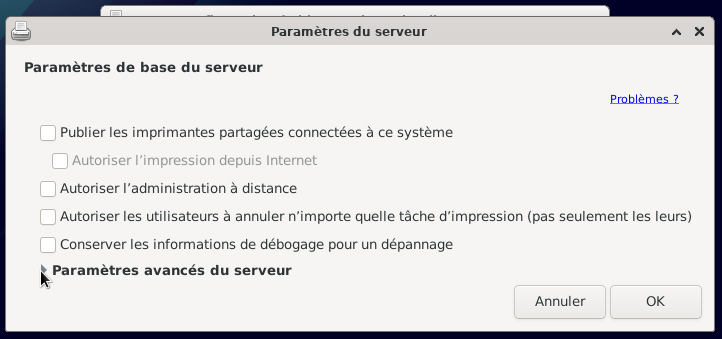
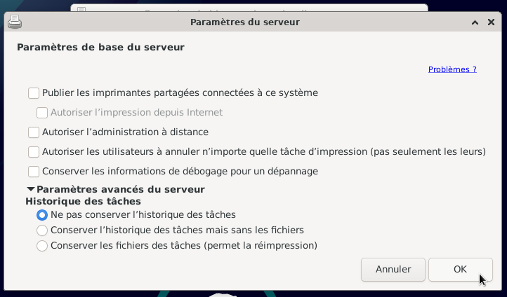
Quitter les paramètres du serveur : Cliquer > ok
Quitter l'application graphique : Serveur > Quitter
Ajouter (installer) manuellement une imprimante
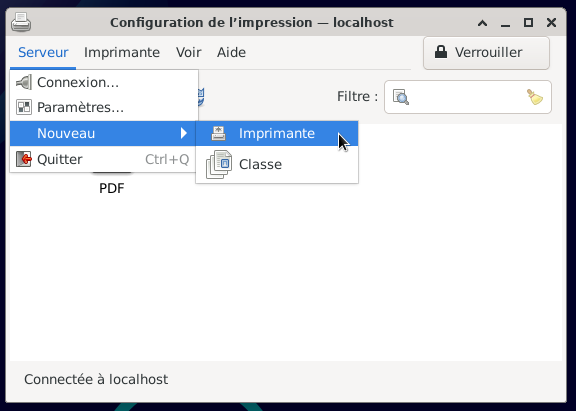
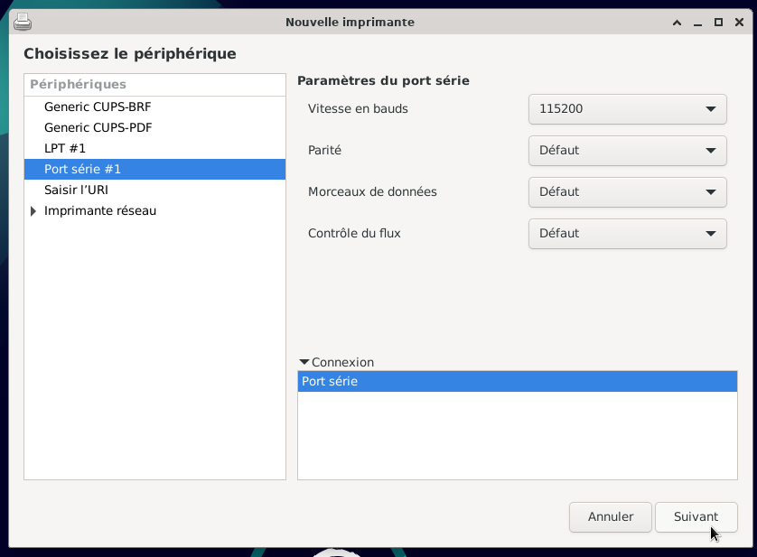
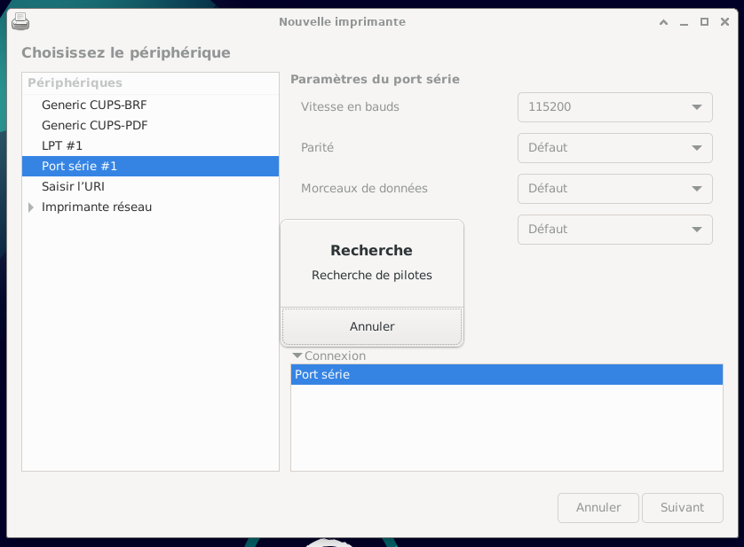
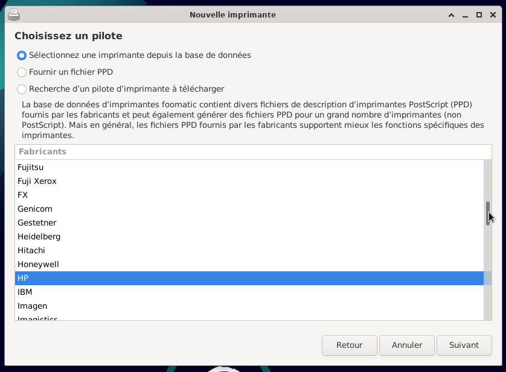
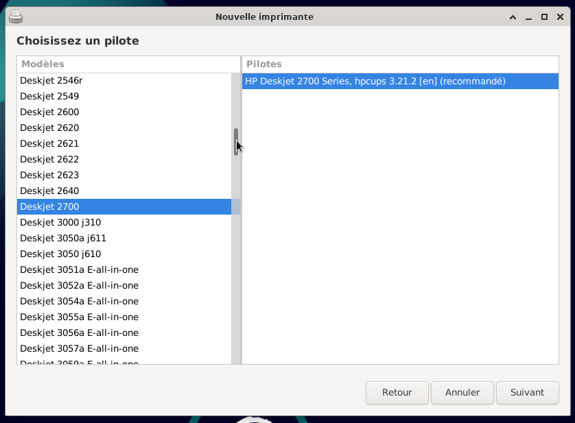
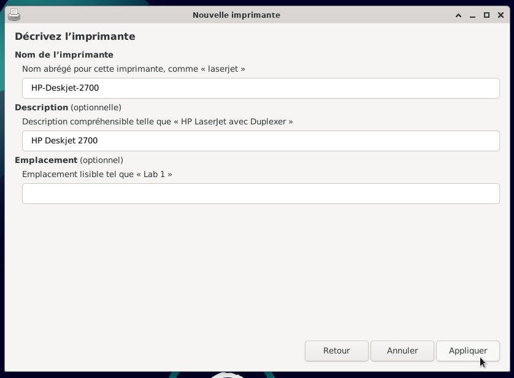
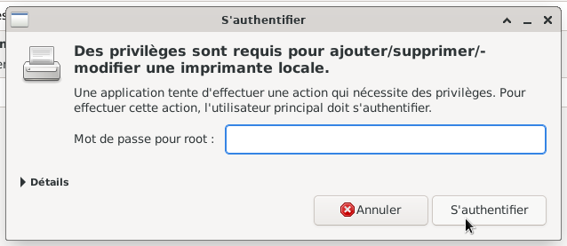
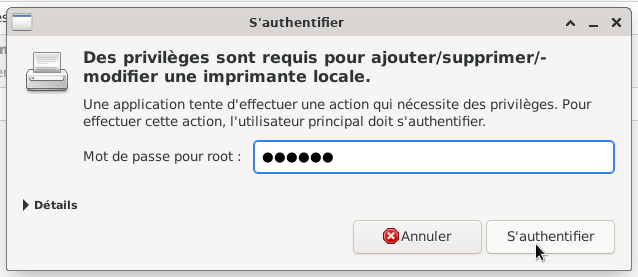
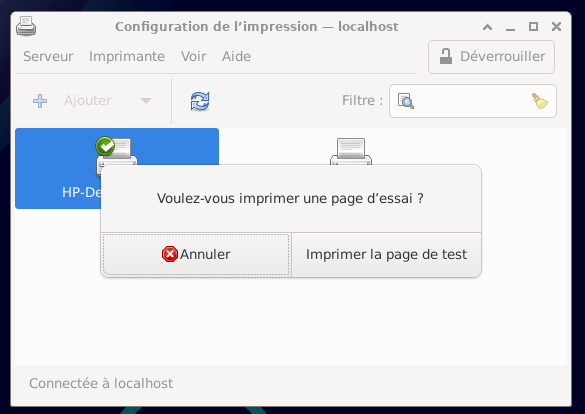
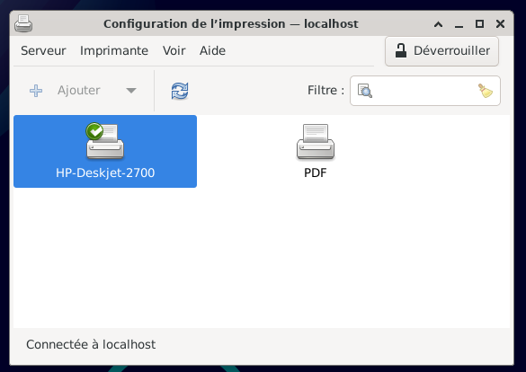
Quitter l'application graphique : Serveur > Quitter